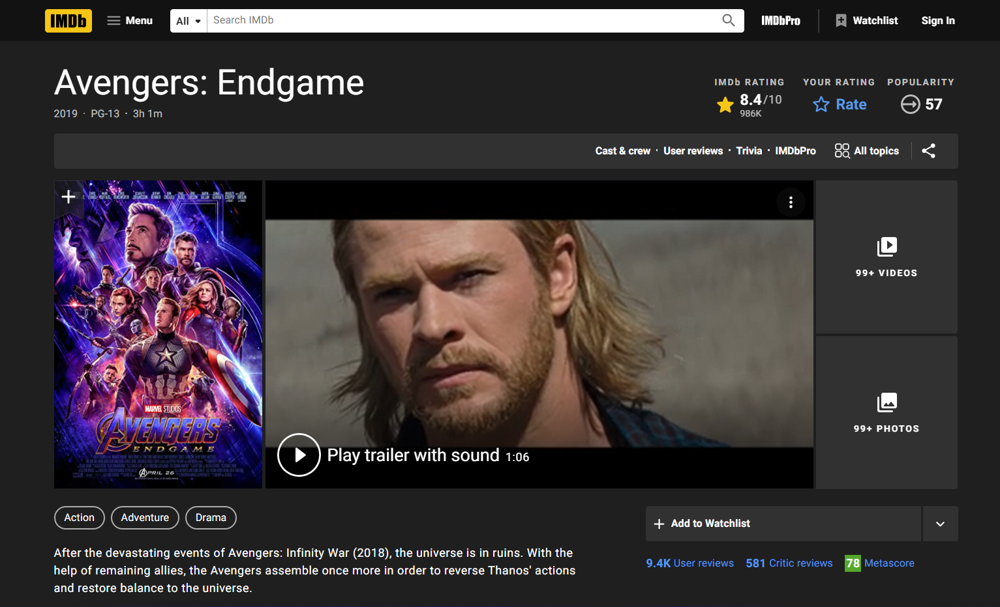
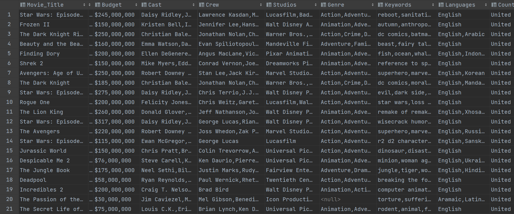

Box Office Revenue
Analysis and Prediction
Accurate and reliable prediction of the Box Office Revenue (BOR) of a movie before releasing is very challenging as it is affected by a lot of complex factors. In this project, we will conduct data collection, exploratory data analysis and machine learning to analyze and predict movie BOR.


Datasets
We process data after each step:
After data collection: data_joined.csv
After data cleaning: cleaned_data.csv
For model training: feature_extracted.csv